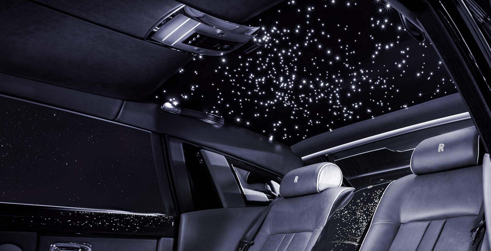

규칙은 깨부수기 위해 존재합니다. 우리는 차례를 기다리고, 뛰기 전에 걷고, 패배도 겸허히 받아들이라고 교육받습니다. 우리는 이를 거부합니다.
기존의 지혜를 무시하고, 규범을 깨부수고 우리만의 삶을 살아갈 때입니다.
Rolls Royce Korea Website
엔진형식 V12 과급방식 트윈터보 배기량 6,749cc 연료 가솔린 연비(등급) 자동 5.8km/ℓ (5등급) 승차인원 4인승 구동방식 후륜구동 변속기 자동8단
Under The Stars
The Starlight Headliner is a spellbinding Rolls-Royce Bespoke feature. Make every journey a magical experience with a stellar scene above you.

별이 빛나는 하늘처럼 반짝반짝 빛나는 듯한 headliner를 올려다본다. 빛이 여러 방향과 다른 강도로 빠져나가도록 하기 위해서 별빛 headliner의 독특한 효과는 다양한 깊이와 각도에 섬세한 광섬유 가닥을 장착하였다.
FUSING ART WITH SCIENCE
It takes sixty engineers, craftsmen, colorists and sculptors to create each Rolls-Royce. Together, they take up to 800 hours designing, constructing and crafting. A unified collaboration under one roof with a single objective: to achieve the extraordinary as they build your dream.
Bespoke Service
VENEER
롤스로이스 작업실에서는 최상급의 우드 베니어만을 엄선하여 사용합니다. 고도로 숙련된 전문가의 손길로 제작되는 2만여 종의 우드 베니어 옵션을 선택할 수 있으며, 재료로 사용된 나무의 그윽한 멋을 그대로 품고 있습니다.
LEATHER
매우 부드러운 촉감을 자랑하는 롤스로이스 가죽은 전용 염색 과정을 사용해 가죽 마찰음을 유발하지 않습니다. 대조되는 생삭의 파이핑, 스티칭 또는 자수 장식과 조화할 경우 예술품과 같은 마감을 완성할 수 있습니다.
PAINT
4만 4천여 종의 컬러와 대조되는 색상 조합으로 귀하의 취향에 따라 화려하거나 차분한 느낌의 차량을 만드실 수 있습니다.
Bespoke 팀은 더욱 개성있는 표현을 원하시는 분을 위한색상을 개발한 후 귀하의 이름을 따 명명할 수도 있습니다.
CRAFTSPEOPLE
최고의 재료와 첨단 기술, 타의 추종을 불허하는 디자이너와 장인들의 경험을 통해 귀하만큼이나 특별한 롤스로이스 자동차를 제작해 드립니다.